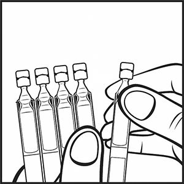
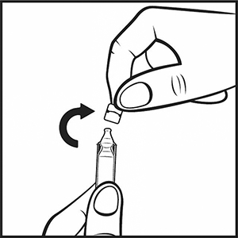
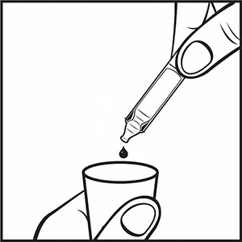

|
 |
| БЕРАКСОЛ-СОЛОФАРМ (BERAKSOL-SOLOPHARM) ambroxol раствор д/приема внутрь и ингаляций | ||||||
|
Клинико-фармакологическая группа: Муколитический и отхаркивающий препарат Номер и дата регистрации: ЛП-004415 от 15.08.17 Код ATX: R05CB06 |
Владелец регистрационного удостоверения: зарегистрировано и произведено Представительство: | |||||
Форма выпуска, состав и упаковка ◊ Раствор для приема внутрь и ингаляций (флакон или тюбик-капельница/ампула А) в виде прозрачной, бесцветной или слегка окрашенной жидкости; растворитель (тюбик-капельница/ампула Б) - прозрачная, бесцветная жидкость; приготовленный раствор (препарат + растворитель) - прозрачная, бесцветная или слегка окрашенная жидкость.
Вспомогательные вещества: натрия хлорид - 6.22 мг, натрия гидрофосфата дигидрат - 4.35 мг, лимонная кислота безводная - 1.83 мг, бензалкония хлорид - 0.225 мг, вода д/и - до 1 мл. Состав растворителя (на 1 мл): натрия хлорид - 9 мг, вода д/и - до 1 мл. 2 мл - тюбики-капельницы/ампулы А полиэтиленовые (10) - пакеты из пленки фольгированной (2) - пачки картонные. | ||||||
| ||||||
Описание препарата основано на официально утвержденной инструкции по применению и утверждено компанией-производителем для издания 2022 г. | ||||||
Фармакологическое действие |
Фармакокинетика |
Показания |
Режим дозирования |
Побочное действие |
Противопоказания |
Беременность и лактация |
Особые указания |
Передозировка |
Лекарственное взаимодействие |
Условия хранения и сроки годности |
Условия реализации
Фармакологическое действие
В исследованиях показано, что амброксол увеличивает секрецию в дыхательных путях. Он усиливает продукцию легочного сурфактанта и стимулирует цилиарную активность. Эти эффекты приводят к усилению тока и транспорта слизи (мукоцилиарного клиренса). Усиление мукоцилиарного клиренса улучшает отхождение мокроты и облегчает кашель. У пациентов с хронической обструктивной болезнью легких длительная терапия амброксолом (на протяжении не менее 2 месяцев) приводила к значительному снижению числа обострений. Отмечалось достоверное уменьшение длительности обострений и числа дней антибиотикотерапии. Фармакокинетика
Всасывание Для всех лекарственных форм амброксола немедленного высвобождения характерна быстрая и почти полная абсорбция из ЖКТ с линейной зависимостью от дозы в терапевтическом интервале концентраций. Cmax в плазме крови при пероральном приеме достигается через 1-2.5 ч. Распределение Vd составляет 552 л. В терапевтическом интервале концентраций связывание с белками плазмы составляет примерно 90%. Переход амброксола из крови в ткани при пероральном применении происходит быстро. Самые высокие концентрации активного компонента препарата наблюдаются в легких. Метаболизм Примерно 30% принятой пероральной дозы подвергается эффекту "первого прохождения" через печень. Исследования на микросомах печени человека показали, что изофермент CYP3A4 является преобладающей изоформой, ответственной за метаболизм амброксола до дибромантраниловой кислоты. Оставшаяся часть амброксола метаболизируется в печени, главным образом путем глюкуронизации и путем частичного расщепления до дибромантраниловой кислоты (приблизительно 10 % от введенной дозы), а также небольшого количества дополнительных метаболитов. Выведение Терминальный T1/2 амброксола составляет 10 ч. Общий клиренс находится в пределах 660 мл/мин, на почечный клиренс приходится примерно 8% от общего клиренса. Методом радиоактивной метки было подсчитано, после приема однократной разовой дозы препарата в течение последующих 5 дней с мочой выделяется около 83% принятой дозы. Показания
Острые и хронические заболевания дыхательных путей с выделением вязкой мокроты:
Режим дозирования
Муколитический эффект препарата проявляется при приеме большого количества жидкости. Поэтому во время лечения рекомендуется обильное питье.
Внутрь применяют препарат из тюбик-капельницы/ампулы А или флакона (1 мл = 20 капель из капельницы флакона) после еды, добавляя в воду, чай, молоко или фруктовый сок. Взрослым и детям старше 12 лет: первые 2-3 дня по 4 мл (80 капель) 3 раза/сут (что соответствует 90 мг амброксола в сут), затем – по 4 мл (80 капель) 2 раза/сут (что соответствует 60 мг амброксола в сут). Детям от 6 до 12 лет: по 2 мл (40 капель) 2-3 раза/сут (что соответствует 30 или 45 мг амброксола в сут). Детям от 2 до 6 лет: по 1 мл (20 капель) 3 раза/сут (что соответствует 22,5 мг амброксола в сут). Детям до 2 лет: по 1 мл (20 капель) 2 раза/сут (что соответствует 15 мг амброксола в сут). Детям младше 2 лет препарат назначают только под контролем врача. Максимальная суточная доза при приеме внутрь: для взрослых – 90 мг, для детей 6-12 лет – 45 мг, для детей 2-6 лет – 22,5 мг, для детей до 2 лет – 15 мг.
Препарат можно применять, используя любое современное оборудование для ингаляций (кроме паровых ингаляторов). Перед ингаляцией количество препарата, соответствующее необходимой дозировке, смешивают с растворителем (0.9% раствором натрия хлорида) (для оптимального увлажнения воздуха – в соотношении 1:1). Перед ингаляцией рекомендуется подогреть ингаляционный раствор до температуры тела. Поскольку при ингаляционной терапии глубокий вдох может спровоцировать кашель, ингаляции следует проводить в режиме обычного дыхания. Пациентам с бронхиальной астмой рекомендуется проводить ингаляцию после приема бронхолитических препаратов во избежание неспецифического раздражения дыхательных путей и их спазма. Порядок работы с комплектом (тюбик-капельница/ампула А + тюбик-капельница/ампула Б): 1. Подготовить оборудование для ингаляций согласно инструкции производителя. 2. Отделить тюбик-капельницу/ампулу А (рис. 1).  Рис. 1 3. Вскрыть тюбик-капельницу/ампулу А, убедившись, что раствор находится в нижней части тюбик-капельницы/ампулы, вращающими движениями повернуть и отделить клапан (рис. 2).  Рис. 2 4. Поместить содержимое тюбик-капельницы/ампулы А в резервуар оборудования для ингаляций в необходимой дозе (рис. 3).  Рис. 3 5. Выполнив аналогичные действия с тюбик-капельницей/ампулой Б, добавить ее содержимое перед ингаляцией в резервуар оборудования для ингаляций (для оптимального увлажнения воздуха – в соотношении 1:1). 6. Далее следовать инструкции по эксплуатации оборудования для ингаляций. В случае применения препарата во флаконе для точного отмеривания дозы препарата прилагается мерный стакан. Дозы для ингаляций Взрослым и детям старше 6 лет: 1-2 ингаляции/сут по 2-3 мл (40-60 капель) раствора (что соответствует 15-45 мг амброксола в сут). Детям до 6 лет: 1-2 ингаляции/сут по 2 мл (40 капель) раствора (что соответствует 15-30 мг амброксола в сут). Прием препарата более 4-5 дней возможен только по рекомендации врача. Побочное действие
Частота побочных эффектов представлена в следующей градации: очень часто (≥1/10); часто (≥1/100 до <1/10); нечасто (≥1/1000 до <1/100); редко (≥1/10000 до <1/1000); очень редко (<1/10000); неизвестно (не может быть оценена на основе имеющихся данных). Со стороны ЖКТ: часто – тошнота, снижение чувствительности в полости рта и глотке; нечасто – диспепсия, боль в верхней части живота, рвота, диарея; редко – изжога, сухость слизистой оболочки полости рта и глотки, запор. Со стороны дыхательной системы: редко – сухость слизистой оболочки дыхательных путей, ринорея. Со стороны нервной системы: часто – дисгевзия (нарушение вкусовых ощущений). Со стороны иммунной системы: редко – реакции гиперчувствительности, кожная сыпь, крапивница, зуд, ангионевротический отек; очень редко – анафилактические реакции, в т.ч. анафилактический шок. Со стороны кожи и подкожных тканей: очень редко – синдром Стивенса-Джонсона, синдром Лайелла. Прочие: редко – адинамия, лихорадка. Противопоказания
С осторожностью Нарушение моторной функции бронхов и повышенное образование мокроты (при синдроме неподвижных ресничек), язвенная болезнь желудка и двенадцатиперстной кишки в фазе обострения, ІІ-ІІІ триместры беременности. Пациенты с нарушениями функции почек или тяжелыми заболеваниями печени должны принимать амброксол с особой осторожностью, соблюдая большие интервалы между приемами препарата или принимая препарат в меньшей дозе. Применение при беременности и кормлении грудью
Препарат противопоказано применять в течение І триместра беременности. При необходимости применения амброксола во ІІ-ІІІ триместрах беременности следует оценить потенциальную пользу для матери и возможный риск для плода. В период грудного вскармливания применять препарат противопоказано, поскольку он выделяется с грудным молоком. Особые указания
Бераксол-СОЛОфарм не следует принимать одновременно с противокашлевыми препаратами, которые могут тормозить кашлевой рефлекс. Бераксол-СОЛОфарм следует с осторожностью применять у пациентов с ослабленным кашлевым рефлексом или нарушенным мукоцилиарным транспортом из-за возможности скопления мокроты. Пациентам, принимающим амброксол, не следует рекомендовать выполнение дыхательной гимнастики; у пациентов с тяжелым течением заболевания следует выполнять аспирацию разжиженной мокроты. У пациентов с бронхиальной астмой амброксол может усиливать кашель. Не следует принимать амброксол непосредственно перед сном. У пациентов с тяжелыми поражениями кожи – синдром Стивенса-Джонсона или синдром Лайелла – в ранней фазе могут появляться температура, боль в теле, ринит, кашель и боль в горле. При симптоматическом лечении возможно ошибочное назначение муколитических средств, таких как амброксол. Имеются единичные сообщения о выявлении синдрома Стивенса-Джонсона и синдрома Лайелла, совпавшие по времени с назначением препарата, однако причинно-следственная связь с приемом препарата отсутствует. При развитии вышеперечисленных синдромов рекомендуется прекратить лечение и немедленно обратиться за медицинской помощью. При нарушении функции почек амброксол необходимо применять только по рекомендации врача. Раствор амброксола не рекомендуется смешивать с кромоглициевой кислотой и щелочными растворами. Пациентам, соблюдающим гипонатриевую диету, следует иметь в виду, что в 1 мл раствора амброксола содержится 10 мг натрия. В максимальной суточной дозе для взрослых и детей старше 12 лет содержится 120 мг натрия. Влияние на способность к управлению транспортными средствами и механизмами Случаев влияния препарата на способность управлять транспортными средствами и механизмами до настоящего момента выявлено не было. Передозировка
Симптомы: изжога, диспепсия, диарея, тошнота, рвота, боли в верхней части живота. Имеются сообщения о появлении кратковременного беспокойства. При выраженной передозировке возможно значительное снижение АД. Лечение: искусственная рвота, промывание желудка в первые 1-2 ч после приема препарата; прием жиросодержащих продуктов, симптоматическая терапия. Лекарственное взаимодействие
При применении с противокашлевыми препаратами возможно затруднение отхождения мокроты в результате подавления кашлевого рефлекса. При одновременном применении с амоксициллином, доксициклином, цефуроксимом, эритромицином амброксол увеличивает их концентрацию в бронхиальном секрете. О клинически значимом нежелательном взаимодействии с другими лекарственными средствами не сообщалось. |
||||||
Вернуться наверх |
||||||
Copyright © Справочник Видаль «Лекарственные препараты в России», Москва, Россия